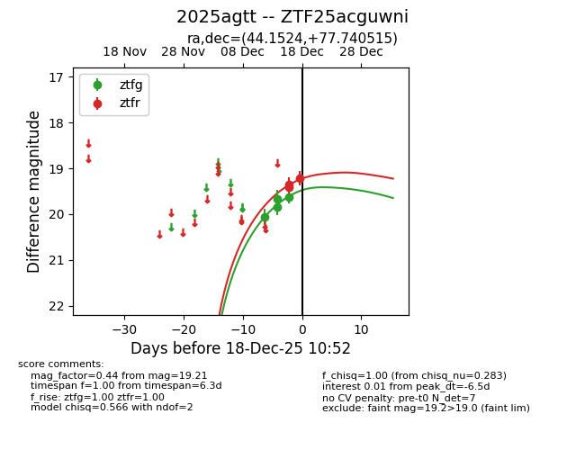
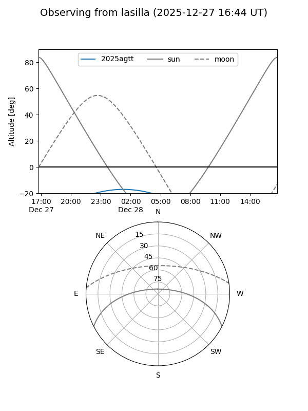
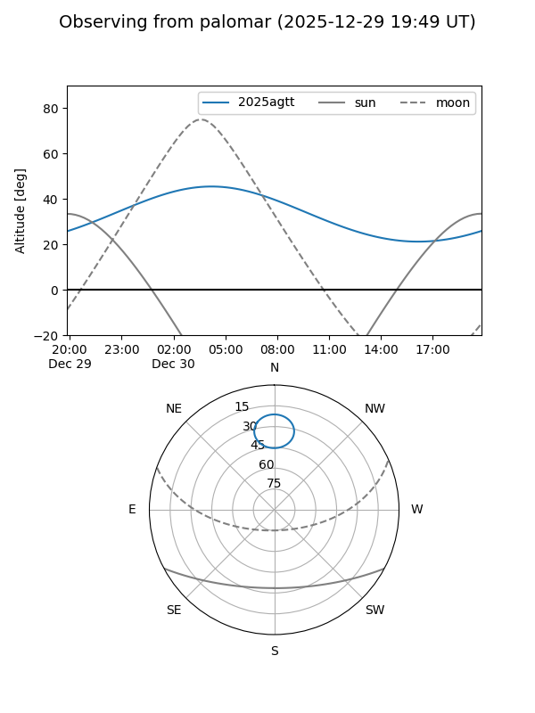
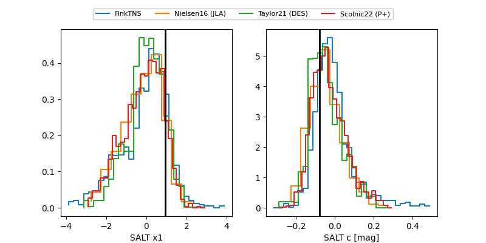

2025agtt
Target 2025agtt at 2025-12-20 06:04
Aliases and brokers:
FINK: fink-portal.org/ZTF25acguwni
Lasair: lasair-ztf.lsst.ac.uk/objects/ZTF25acguwni
ALeRCE: alerce.online/object/ZTF25acguwni
TNS: wis-tns.org/object/2025agtt
YSE: ziggy.ucolick.org/yse/transient_detail/2025agtt
alt names
ZTF25acguwni (ztf,fink_ztf)
2025agtt (tns,yse)
Coordinates:
equatorial (ra, dec) = 44.1524,+77.74052
equatorial (HMS+DMS) = 02:56:36.57,+77:44:25.85
galactic (l, b) = (129.5374,+16.50495)
Flags:
Photometry:
last ztfg=19.26, ztfr=19.18
7 ztfg, 6 ztfr detections
Lightcurve

Visibility


Additional plots
